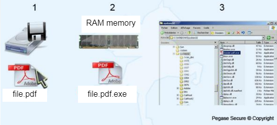

What Is It?
A Trojan horse is a computer virus that web users download unknowingly. It dissimulates itself as a legitimate program, but it executes hidden functions that endanger your device and your sensitive data. Unlike other viruses, this one doesn’t spread across the network as fast since it can’t reproduce itself.
 8. Enterprise Comodo
8. Enterprise Comodo
Origins of the Name
The name comes from the strategy the Greeks used against their enemies in the Trojan War. The Greeks faked their retreat and left a giant wooden horse behind. The Trojans accepted it as a victory trophy and brought it inside their city, but they didn’t know that the Greeks were inside it. In the night, the Greeks opened the gates to the rest of their army. Thanks to that, they were able to destroy the city and win the war. The Trojan Virus does the same thing. It looks inoffensive like a wooden horse, but it can open a backdoor in your device and it can cause serious damage to it.

Example
 6. Etienne Forest and Rachid Kadouche, Lionel-Groulx College{kind=link}
- Execution of the fake PDF file.
- The file is kept in memory.
- The Trojan horse is placed in the Windows startup.
How to Avoid It
- Be cautious of what you are downloading.
- Only download from a source you trust completely.
- Use an antivirus software on your device. A good antivirus software can detect Trojan horses and prevent you from downloading them.
- Never run a program or open an email attachment from someone you don’t trust. Never open any links or attachments from a suspicious source because a Trojan horse could be hidden in it.
Sources:
5. WebRoot
6. Etienne Forest and Rachid Kadouche, Lionel-Groulx College
7. Wikipedia
8. Enterprise Comodo
· Header's image by Naveen Verma, November 9, 2018, https://medium.com/webeagle/an-introduction-to-the-trojan-horse-virus-e78a73143fe